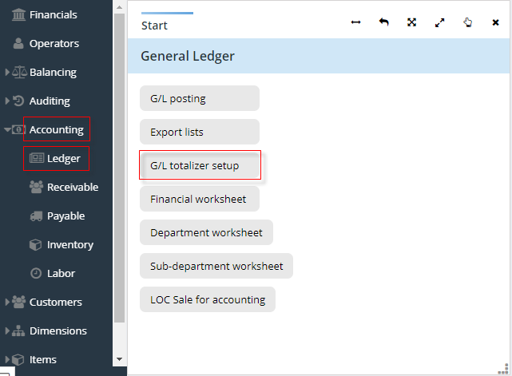
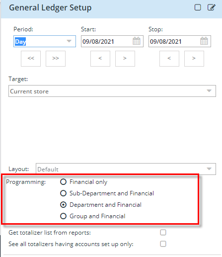
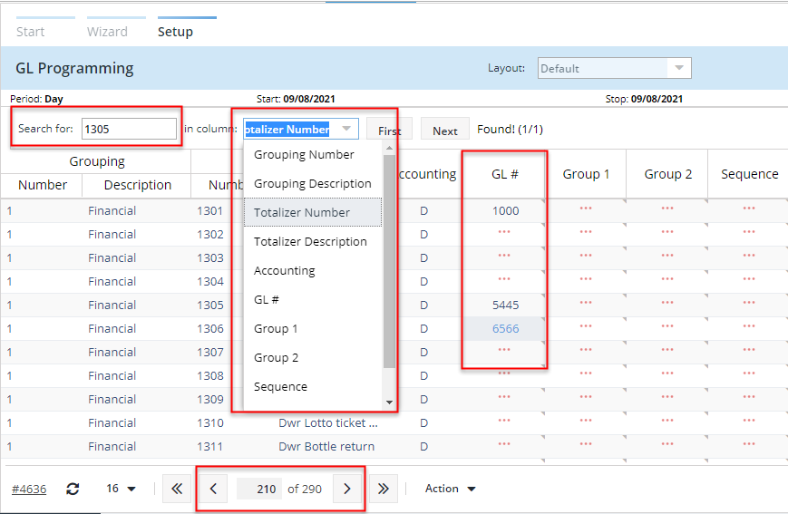
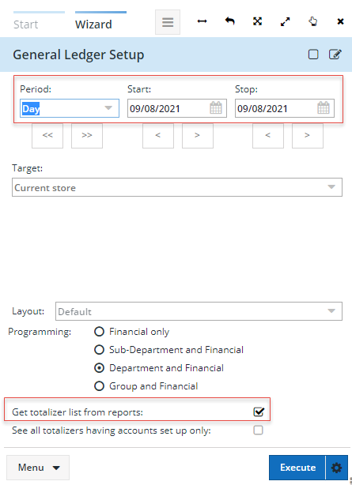
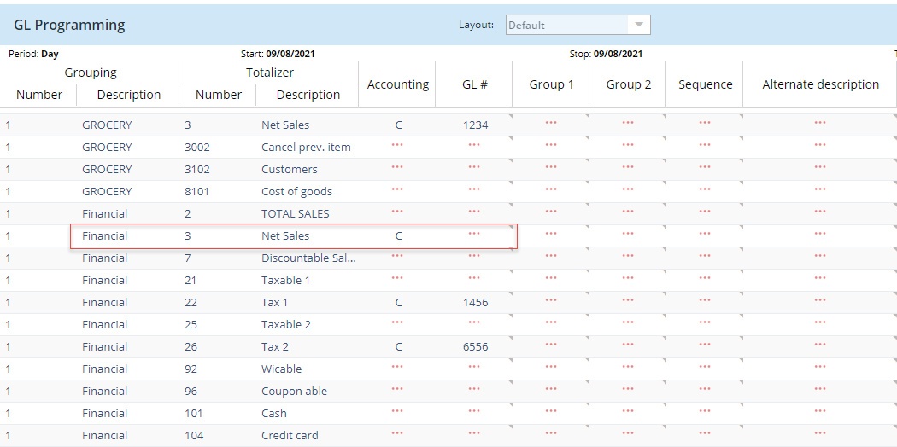

Information
The Ledger entry in eSuite Manage module allows you to program the general ledger, post and generate the generic accounting export for G/L (General Ledger) in order to impact the balance sheet's assets and liabilities.
Program the G/L Totalizer
When programming the general ledger, it affects data being exported to impact the balance sheet assets and liabilities. Before data can be exported, you need to associate a General Ledger account number to each totalizer to export.
Steps:
- In the launcher, click the arrow on Accounting entry to display its menu.
- Click on Ledger
- Select G/L totalizer setup

-
Add all necessary criteria and click Execute
-
Programming list: When you are programming your General Ledger accounts you need to define which list the required totalizers to export.
-
-
NOTE: Period is not being used unless you are selecting to 'Get totalizer list from reports' detailed below.
 - Click Execute
- You can scroll to the totalizer, toggle from next page to previous page, use the 'search for' and 'in column' search tools in the grid.
- Enter the General Ledger account associated to the selected totalizer.
-

Totalizer list from reports: We have added the option to 'Get totalizer list from reports' in the General Ledger Setup wizard. If this field is enabled, the search will use the dates entered in the Period and will search for totalizer having values in that date range:

This will provide you with a list of totalizers that have values for 09/08/2021. You can go through the list of totalizers and add a GL account where one is missing:
